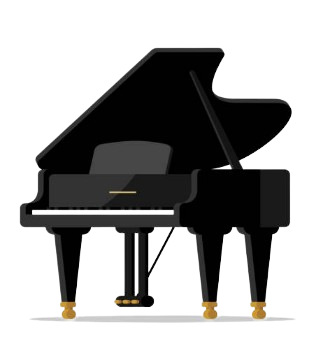
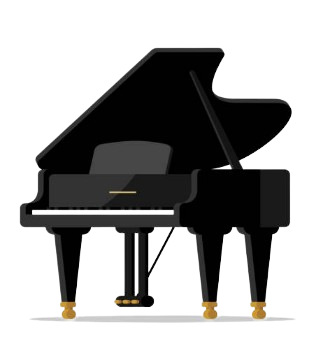

Academic Achievements:
With an endless number of to-do lists and goals down the page, I cannot express how much my academic life matters to me. During primary, most of my mind was floating in innocence, but in the course of Year 7 and 8 (in Intermediate), something just "clicked"! I knew exactly the person that I wanted to become. Having diligently accumulated knowledge and learning materials since then, I am now a much brighter and more hopeful student. In Year 9 (2023), my dream came to materialisation in front of my bubbling eyes. I received the Academic Honour Roll Award. To the right is a picture of me! ME! Although it has been another half a year since that magnificent accomplishment, the memory of that unforgettable moment still burns like fire in my head. I can recall every single one of my feelings the second I heard my name called. I couldn't have been more happy for myself.This year, I hope to do even better and reach further out into the realm of academic achievements. I hope that I will receive another one of these valuable plaques in my hands, feel another wave of pride and relief gush over me in a shower.
No matter what, I will continue to work at my best ability and endeavour to find out more about this most interesting world.
If you want to check it out, here are the list of our hard-working BDSC junior award winners for 2023!
2023 BDSC Junior Award Winners
Life Achievements:
Throughout my years of living, I have experienced many worthy experiences out of which I have extracted a spectrum of dynamic truths and philosophies. I am a delicate, fragile person with an exquisitely fine heart and soul; hitherto, I have been very sensitive, easily shattered by the failures and the obstructions that stand in my way. However, I am proud of myself for being able to navigate through every one of these difficulties and also gain precious knowledge on how to deal with future situations.My earliest achievement in life include migration and also all the complex processes under the umbrella of moving to a new country. Originating from the Chinese culture, becoming accustomed to the New Zealand cultures serve as one of my greatest and most radiant personal accomplishments. I learned and mastered the English language relatively quickly, and I managed to learn how to mix and mingle with my fellow schoolmates. All these new gains remind me of my self-worth and serves as a booster for my self-confidence.
Perhaps, one of the most wondrous life lessons that have sunk into my mind is the importance of a growth mindset. Through the experience of multiple declines and resurgences in my growth journey, I have concluded that a positive growth mindset is the sole starter anybody needs in order to build up from a solid foundation. The quote "no pain no gain" is one of the most inspiring quotes, reminding me that any achievement requires dedication and devotion in order to come to fruition. "Nature is important, but nurture may be the ultimate key to success." Many more quotes float through my mind everyday, strengthening my willingness to excel and continue upgrading myself.
After having pulled through hard times and struggles, I have learnt most importantly that life is not supposed to be all rainbows and roses. Impediments should be anticipated, and should be overcome with the utmost courage. It is essential to remember that the universe invariably has your back, and that time will heal everything.
"Believe you can, and you are already halfway there."
Co-curricular Achievements
Throughout my school life, I have participated and prospered in may extra-curricular activites. I strive to nurture a multi-faceted life that extends beyond my education journey.With this said, one of my greatest passions is music. I love playing the piano with all my heart, and music has always been my closest companion. Furthermore, I consider myself quite talented in the field of playing music. I have attempted several piano competitions and performances, all of which I received favourable outcomes from. My music life can be said to be the most vivid and celebrated side of me.
I also foster a whole-hearted adoration for surfing on the internet. Mental wellbeing interests me. I love doing random research on psychology and personality types.
On the sports side, I play table tennis and practice running at times. While sports may not be one of my strengths in which I fly, I still consider it an indispensable part of my life that I have to nurture for the sake of my health.
 
